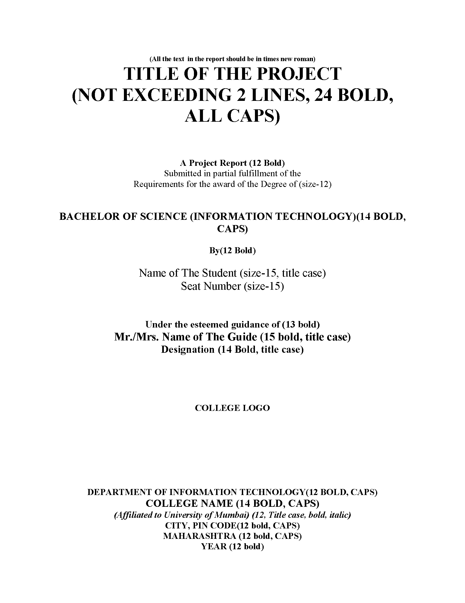
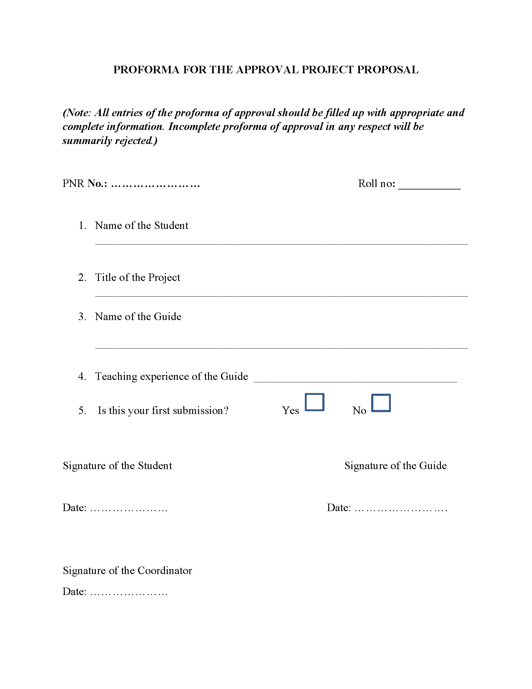
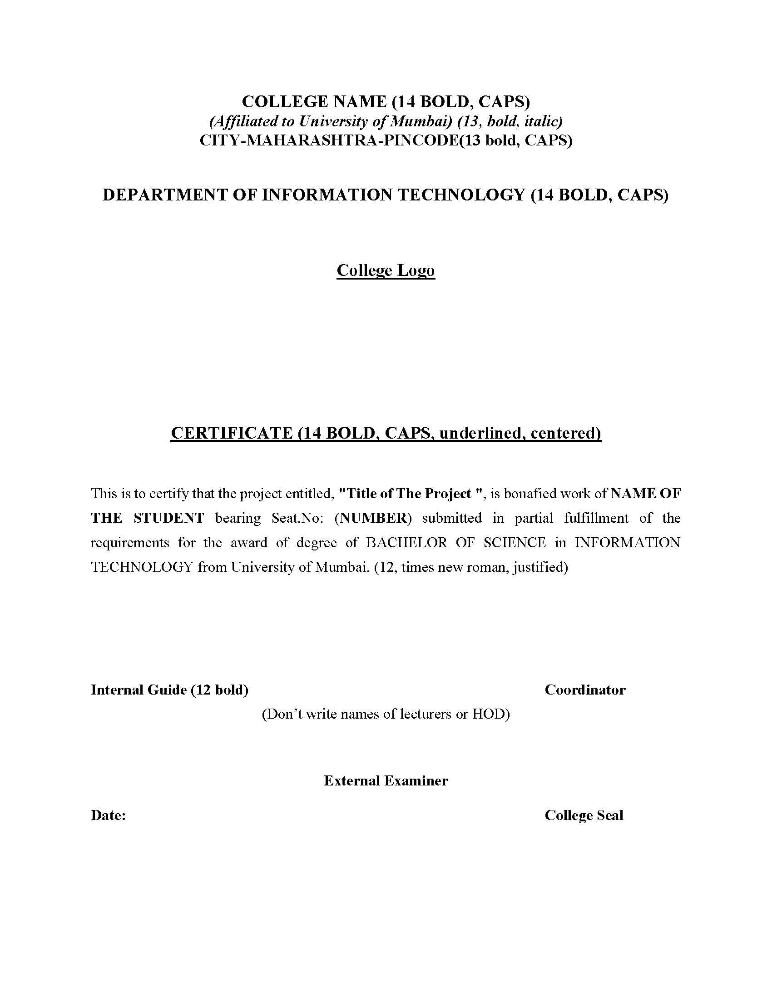
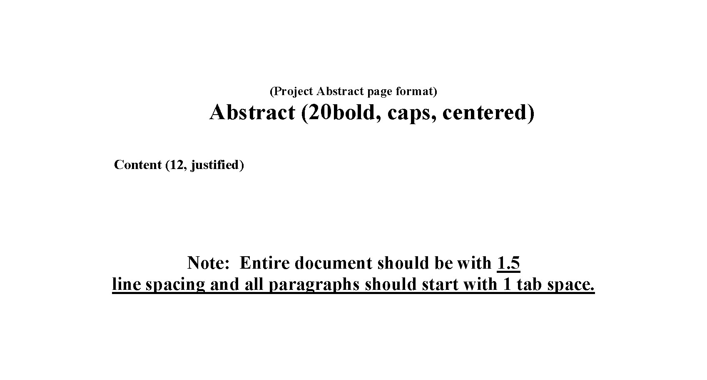
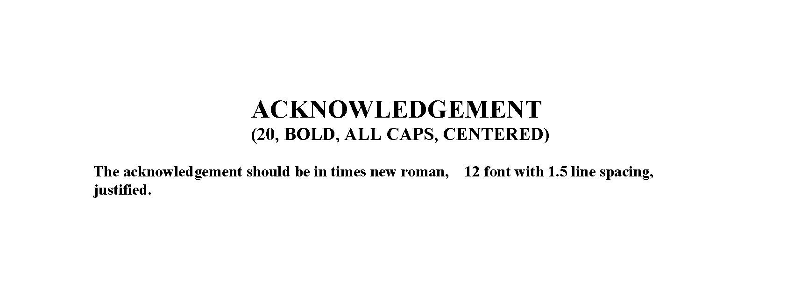
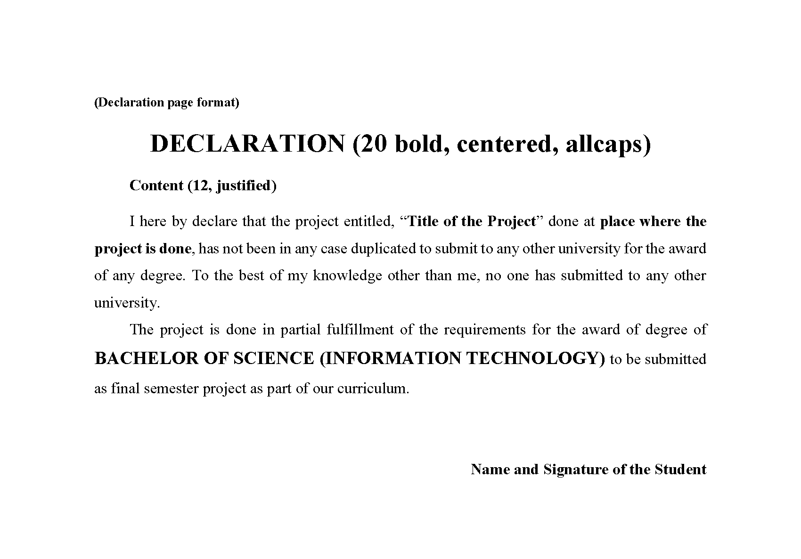
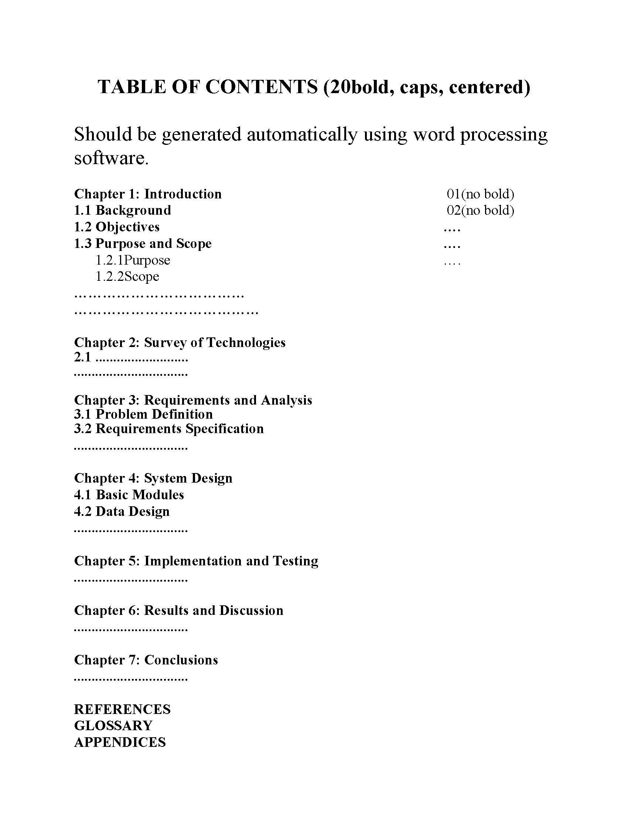
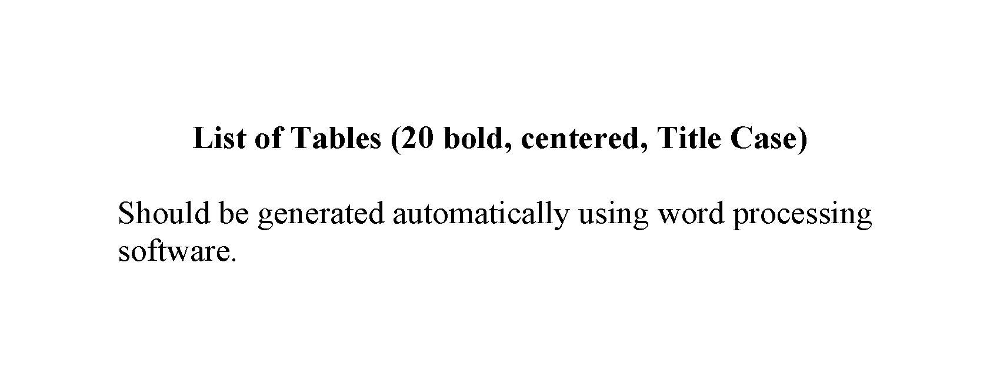
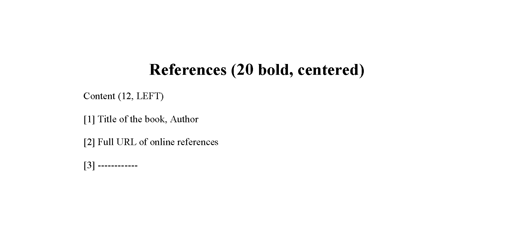

Project Dissertation Semester V and Project Implementation Semester VI
Objectives of the Project:
- Describe the Systems Development Life Cycle (SDLC).
- Evaluate systems requirements.
- Complete a problem definition.
- Evaluate a problem definition.
- Determine how to collect information to determine requirements.
- Perform and evaluate feasibility studies like cost-benefit analysis, technical feasibility, time feasibility and Operational feasibility for the project.
- Work on data collection methods for fact finding.
- Construct and evaluate data flow diagrams.
- Construct and evaluate data dictionaries.
- Evaluate methods of process description to include structured English, decision tables and decision trees.
- Evaluate alternative tools for the analysis process.
- Create and evaluate such alternative graphical tools as systems flow charts and state transition diagrams.
- Decide the S/W requirement specifications and H/W requirement specifications.
- Plan the systems design phase of the SDLC.
- Distinguish between logical and physical design requirements.
- Design and evaluate system outputs.
- Design and evaluate systems inputs.
- Design and evaluate validity checks for input data.
- Design and evaluate user interfaces for input.
- Design and evaluate file structures to include the use of indexes.
- Estimate storage requirements.
- Explain the various file update processes based on the standard file organizations.
- Decide various data structures.
- Construct and evaluate entity-relationship (ER) diagrams for RDBMS related projects.
- Perform normalization for the unnormalized tables for RDBMS related projects
- Decide the various processing systems to include distributed, client/server, online and others.
- Perform project cost estimates using various techniques.
- Schedule projects using both GANTT and PERT charts.
- Perform coding for the project.
- Documentation requirements and prepare and evaluate systems documentation.
- Perform various systems testing techniques/strategies to include the phases of testing.
- Systems implementation and its key problems.
- Generate various reports.
- Be able to prepare and evaluate a final report.
- Brief the maintenance procedures and the role of configuration management in operations.
- To decide the future scope and further enhancement of the system.
- Plan for several appendices to be placed in support with the project report documentation.
- Work effectively as an individual or as a team member to produce correct, efficient, well-organized and documented programs in a reasonable time.
- Recognize problems that are amenable to computer solutions, and knowledge of the tool necessary for solving such problems.
- Develop of the ability to assess the implications of work performed.
- Get good exposure and command in one or more application areas and on the software
- Develop quality software using the software engineering principles
- Develop of the ability to communicate effectively.
Type of the Project:
The majority of the students are expected to work on a real-life project preferably in some industry/ Research and Development Laboratories/Educational Institution/Software Company. Students are encouraged to work in the areas listed below. However, it is not mandatory for a student to work on a real-life project. The student can formulate a project problem with the help of her/his Guide and submit the project proposal of the same. Approval of the project proposal is mandatory. If approved, the student can commence working on it, and complete it. Use the latest versions of the software packages for the development of the project.
Software and Broad Ideas of Application:
- Front-End/GUI Tools - .Net Technologies, Java
- Back-End/DBMS - Oracle, SQL Plus, MY SQL, SQL Server
- Languages - C, C++, Java, VC++, C#, R,Python
- Scripting Languages - PHP,JSP, SHELL Scripts (Unix), TcL/TK
- .NET Platform - F#,C#. Net, Visual C#. Net, ASP.Net
- Middle Ware(Component) Technologies - COM/DCOM, Active-X, EJB
- UNIX Internals - Device Drivers, RPC, Threads, Socket programming
- Realtime Operating Systems/Embedded Skills - LINUX, Raspberry Pi, Arduino, 8051
- Application Areas - Financial / Insurance / Manufacturing / Multimedia / Computer Graphics / Instructional Design/ Database Management System/ Internet / Intranet / Computer Networking-Communication Software development/ E-Commerce/ ERP/ MRP/ TCP-IP programming / Routing protocols programming/ Socket programming
Introduction to the Project:
The project report should be documented with scientific approach to the solution of the problem that the students have sought to address. The project report should be prepared in order to solve the problem in a methodical and professional manner, making due references to appropriate techniques, technologies and professional standards. The student should start the documentation process from the first phase of software development so that one can easily identify the issues to be focused upon in the ultimate project report. The student should also include the details from the project diary, in which they will record the progress of their project throughout the course. The project report should contain enough details to enable examiners to evaluate the work. The important points should be highlighted in the body of the report, with details often referred to appendices.
Structure/Format/Blueprint of the Project:
Chapter 1 to 4 should be submitted in Semester V in spiral binding. These chapter have also to be included in Semester VI report. Semester VI report has to be hard bound with golden embossing. Students will be evaluated based on the dissertation in semester V and dissertation and viva voce in Semester VI.
i. Title Page:
Sample format of Title page is given below. Students should follow the given format.
ii. Original Copy of the Approved Proforma of the Project Proposal:
Sample Proforma of Project Proposal is given below. Students should follow the given format.
iii.Certificate of Authenticated work:
Sample format of Certificate of Authenticated work is given below. Students should follow the given format.
iv. Company Certificate (if applicable)
v. Role and Responsibility Form
vi. Abstract:
This should be one/two short paragraphs (100-150 words total), summarising the project work. It is important that this is not just a re-statement of the original project outline. A suggested flow is background, project aims and main achievements. From the abstract, a reader should be able to ascertain if the project is of interest to them and, it should present results of which they may wish to know more details.
vii. Acknowledgements:
This should express student’s gratitude to those who have helped in the preparation of project.
viii. Declaration:
ix. Table of Contents:
The table of contents gives the readers a view of the detailed structure of the report. The students would need to provide section and subsection headings with associated pages. The formatting details of these sections and subsections are given below.
x. List of Tables:
List of all the tables in the project along with their page numbers.
xi. List of Figures:
List of all the figures, graphs, charts etc. in the project along with their page numbers.
Chapter 1: Introduction
The introduction has several parts as given below:
- Background: A description of the background and context of the project and its relation to work already done in the area. Summarise existing work in the area concerned with the project work.
- Objectives: Concise statement of the aims and objectives of the project. Define exactly what is going to be done in the project; the objectives should be about 30 /40 words.
- Purpose, Scope and Applicability: The description of Purpose, Scope, and Applicability are given below:
- Purpose: Description of the topic of the project that answers questions on why this project isbeing done. How the project could improve the system its significance and theoretical framework.
- Scope: A brief overview of the methodology, assumptions and limitations. The students shouldanswer the question: What are the main issues being covered in the project? What are the main functions of the project?
- Applicability: The student should explain the direct and indirect applications of their work.Briefly discuss how this project will serve the computer world and people.
- Achievements: Explain what knowledge the student achieved after the completion of the work. What contributions has the project made to the chosen area? Goals achieved - describes the degree to which the findings support the original objectives laid out by the project. The goals may be partially or fully achieved, or exceeded.
- Organisation of Report: Summarising the remaining chapters of the project report, in effect, giving the reader an overview of what is to come in the project report.
Chapter 2: Survey of Technologies
In this chapter Survey of Technologies should demonstrate the students awareness and understanding of Available Technologies related to the topic of the project. The student should give the detail of all the related technologies that are necessary to complete the project. The should describe the technologies available in the chosen area and present a comparative study of all those Available Technologies. Explain why the student selected the one technology for the completion of the objectives of the project.
Chapter 3: Requirements and Analysis
- Problem Definition: Define the problem on which the students are working in the project. Provide details of the overall problem and then divide the problem in to sub-problems. Define each sub-problem clearly.
- Requirements Specification: In this phase the student should define the requirements of the system, independent of how these requirements will be accomplished. The Requirements Specification describes the things in the system and the actions that can be done on these things. Identify the operation and problems of the existing system.
- Planning and Scheduling: Planning and scheduling is a complicated part of software development. Planning, for our purposes, can be thought of as determining all the small tasks that must be carried out in order to accomplish the goal. Planning also takes into account, rules, known as constraints, which, control when certain tasks can or cannot happen. Scheduling can be thought of as determining whether adequate resources are available to carry out the plan. The student should show the Gantt chart and Program Evaluation Review Technique (PERT).
- Software and Hardware Requirements: Define the details of all the software and hardware needed for the development and implementation of the project.
- Hardware Requirement: In this section, the equipment, graphics card, numeric co-processor, mouse, disk capacity, RAM capacity etc. necessary to run the software must be noted.
- Software Requirements: In this section, the operating system, the compiler, testing tools, linker, and the libraries etc. necessary to compile, link and install the software must be listed.
- Preliminary Product Description: Identify the requirements and objectives of the new system. Define the functions and operation of the application/system the students are developing as project.
- Conceptual Models: The student should understand the problem domain and produce a model of the system, which describes operations that can be performed on the system, and the allowable sequences of those operations. Conceptual Models could consist of complete Data Flow Diagrams, ER diagrams, Object-oriented diagrams, System Flowcharts etc.
Chapter 4: System Design
Describes desired features and operations in detail, including screen layouts, business rules, process diagrams, pseudocode and other documentation.
- Basic Modules: The students should follow the divide and conquer theory, so divide the overall problem into more manageable parts and develop each part or module separately. When all modules are ready, the student should integrate all the modules into one system. In this phase, the student should briefly describe all the modules and the functionality of these modules.
- Data Design: Data design will consist of how data is organised, managed and manipulated.
- Schema Design: Define the structure and explanation of schemas used in the project.
- Data Integrity and Constraints: Define and explain all the validity checks and constraintsprovided to maintain data integrity.
- Procedural Design: Procedural design is a systematic way for developing algorithms or procedurals.
- Logic Diagrams: Define the systematical flow of procedure that improves its comprehension andhelps the programmer during implementation. e.g., Control Flow Chart, Process Diagrams etc.
- Data Structures: Create and define the data structure used in procedures.
- Algorithms Design: With proper explanations of input data, output data, logic of processes,design and explain the working of algorithms.
- User Interface Design: Define user, task, environment analysis and how to map those requirements in order to develop a “User Interface”. Describe the external and internal components and the architecture of user interface. Show some rough pictorial views of the user interface and its components.
- Security Issues: Discuss Real-time considerations and Security issues related to the project and explain how the student intends avoiding those security problems. What are the security policy plans and architecture?
- Test Cases Design: Define test cases, which will provide easy detection of errors and mistakes with in a minimum period of time and with the least effort. Explain the different conditions in which the students wish to ensure the correct working of the project.
Chapter 5: Implementation and Testing
- Implementation Approaches: Define the plan of implementation, and the standards the students have used in the implementation.
- Coding Details and Code Efficiency: Students not need include full source code, instead, include only the important codes (algorithms, applets code, forms code etc). The program code should contain comments needed for explaining the work a piece of code does. Comments may be needed to explain why it does it, or, why it does a particular way.The student can explain the function of the code with a shot of the output screen of that program code.
- Code Efficiency: The student should explain how the code is efficient and how the students have handled code optimisation.
- Testing Approach: Testing should be according to the scheme presented in the system design chapter and should follow some suitable model – e.g., category partition, state machine-based. Both functional testing and user-acceptance testing are appropriate. Explain the approach of testing.
- Unit Testing: Unit testing deals with testing a unit or module as a whole. This would test the interaction of many functions but, do confine the test within one module.
- Integrated Testing: Brings all the modules together into a special testing environment, then checks for errors, bugs and interoperability. It deals with tests for the entire application. Application limits and features are tested here.
- Modifications and Improvements: Once the students finish the testing they are bound to be faced with bugs, errors and they will need to modify your source code to improve the system. Define what modification are implemented in the system and how it improved the system.
Chapter 6: Results and Discussion
- Test Reports: Explain the test results and reports based on the test cases, which should show that the project is capable of facing any problematic situation and that it works fine in different conditions. Take the different sample inputs and show the outputs.
- User Documentation: Define the working of the software; explain its different functions, components with screen shots. The user document should provide all the details of the product in such a way that any user reading the manual, is able to understand the working and functionality of the document.
Chapter 7: Conclusions and Future Work
The conclusions can be summarised in a fairly short chapter (2 or 3 pages). This chapter brings together many of the points that would have made in the other chapters.
- Limitations of the System: Explain the limitations encountered during the testing of the project that the students were not able to modify. List the criticisms accepted during the demonstrations of the project.
- Future Scope of the Project describes two things: firstly, new areas of investigation prompted by developments in this project, and secondly, parts of the current work that was not completed due to time constraints and/or problems encountered.
xii. References
It is very important that the students acknowledge the work of others that they have used or adapted in their own work, or that provides the essential background or context to the project. The use of references is the standard way to do this. Please follow the given standard for the references for books, journals, and online material. The citation is mandatory in both the reports.
Eg.
Lipson, Charles (2011). Cite right : A quick guide to citation styles; MLA, APA, Chicago, the sciences, professions, and more (2nd ed.). Chicago [u.a.]: University of Chicago Press. p. 187. ISBN 9780226484648.
xiii. Glossary
If you the students any acronyms, abbreviations, symbols, or uncommon terms in the project report then their meaning should be explained where they first occur. If they go on to use any of them extensively then it is helpful to list them in this section and define the meaning.
xiv. Appendices
These may be provided to include further details of results, mathematical derivations, certain illustrative parts of the program code (e.g., class interfaces), user documentation etc.
In particular, if there are technical details of the work done that might be useful to others who wish to build on this work, but that are not sufficiently important to the project as a whole to justify being discussed in the main body of the project, then they should be included as appendices.
Project Viva Voice:
Student may be asked to write code for problem during VIVA to demonstrate his coding capabilities and he/she may be asked to write any segment of coding used in the in the project. The project can be done in group of at most four students. However, the length and depth of the project should be justified for the projects done in group. A big project can be modularised and different modules can be assigned as separate project to different students.
Marks Distribution:
Semester 5: Documentation - 50 marks
Semester 6: Documentation - 50 marks, Implementation and Viva Voce - 100